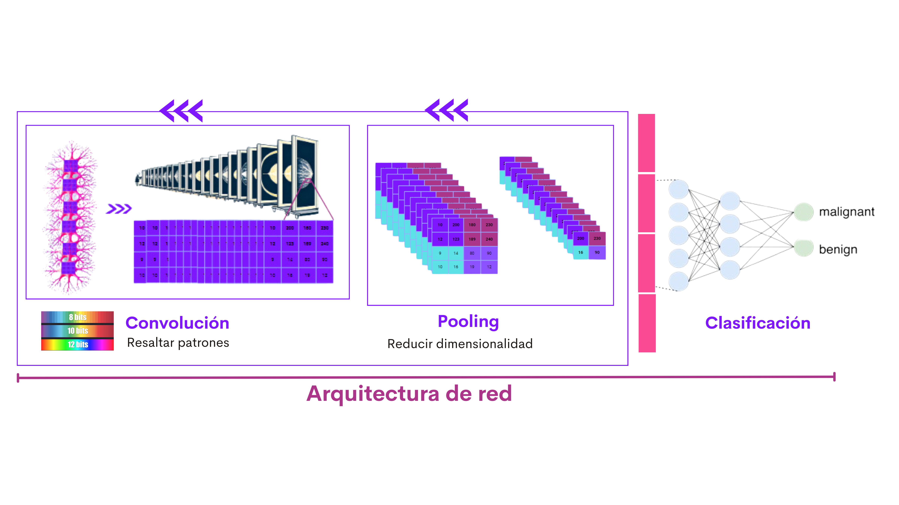
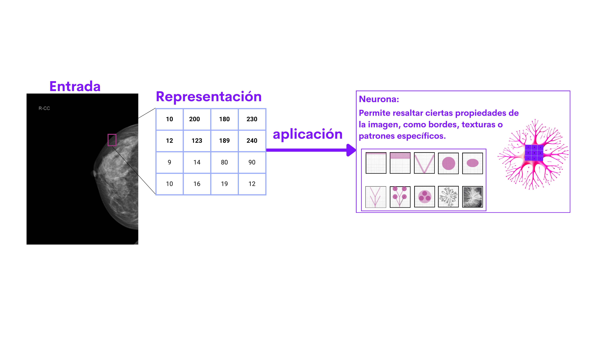
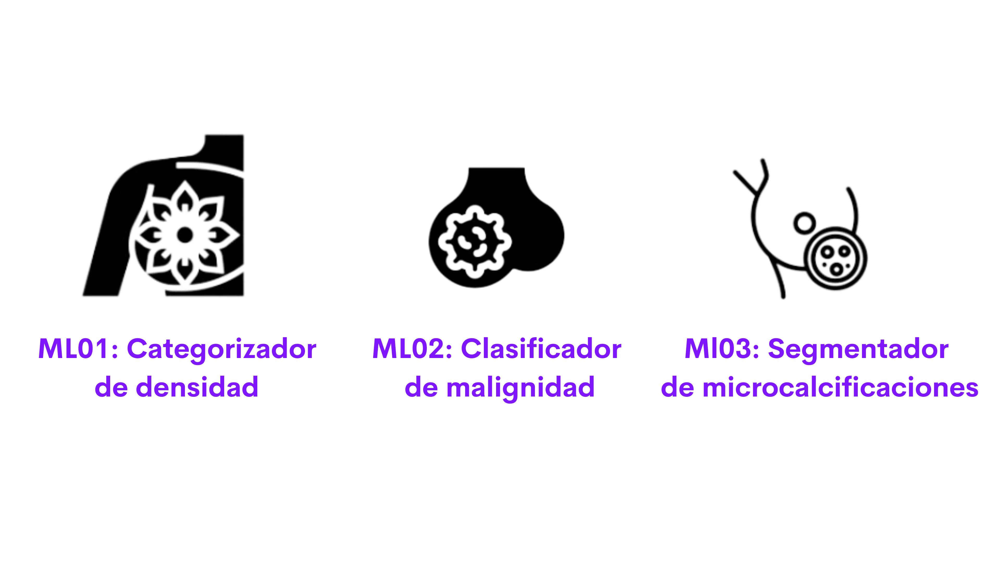

Inteligencia Artificial
¿Qué es la Inteligencia Artificial (IA)?
La inteligencia artificial (IA) es la capacidad de las computadoras o máquinas de realizar tareas que normalmente requieren la inteligencia humana. Por ejemplo, reconocer rostros en fotos, entender el habla o tomar decisiones basadas en datos. La IA se está utilizando cada vez más en muchas áreas, como en los teléfonos inteligentes, las aplicaciones de mapas y, más recientemente, en la medicina.
¿Cómo ayuda la IA en la salud?
En el campo de la salud, la IA puede analizar rápidamente grandes cantidades de datos médicos, como imágenes o informes, para encontrar patrones o detalles que a veces los humanos pueden pasar por alto. Esto ayuda a los médicos a tomar decisiones más rápidas y precisas, mejorando así el diagnóstico y tratamiento de enfermedades.
Redes neuronales y la IA en mamografías
Una de las herramientas más poderosas de la inteligencia artificial son las redes neuronales artificiales, las cuales emulan el funcionamiento del cerebro humano en cuanto a cómo procesa la información. Estas redes están formadas por capas de neuronas artificiales que se conectan entre sí, permitiendo a la red aprender y reconocer patrones a partir de grandes volúmenes de datos, como imágenes de mamografías.
El proceso de análisis de una mamografía a través de estas redes comienza con la transformación de la imagen en una matriz de valores numéricos. Estos valores pasan por filtros o "kernels" que aplican operaciones matriciales, resaltando características clave como bordes, texturas o anomalías en los tejidos.

Procesamiento de imagen mamográfica

Arquitectura de Red Neuronal Convolucional
Redes Neuronales Convolucionales (CNN)
Cuando hablamos de analizar imágenes médicas, como mamografías, utilizamos un tipo especial de red neuronal llamada Red Neuronal Convolucional (CNN). Estas redes están diseñadas específicamente para trabajar con imágenes, ya que utilizan filtros para detectar características clave.
La imagen ilustra un ejemplo de arquitectura CNN, donde la convolución resalta patrones, el pooling simplifica el procesamiento, y la clasificación final determina si una imagen presenta signos de malignidad.
🎧 Escucha nuestro episodio
Descubre cómo las Redes Neuronales Convolucionales están transformando la detección temprana del cáncer de mama.
IA aplicada a las mamografías
En MammoInsight, aplicamos múltiples modelos y arquitecturas de inteligencia artificial. Nuestro sistema combina diversas técnicas para:
- Identificar posibles signos de cáncer: como masas o áreas sospechosas.
- Ayudar al diagnóstico preciso: reduciendo el margen de error y aumentando la velocidad de detección.
La IA no reemplaza a los médicos, sino que los apoya, brindando información útil y haciendo que los diagnósticos sean más eficientes.

Tecnologías y recursos
Desarrollo y Plataforma
La plataforma se desarrolla utilizando una combinación de tecnologías modernas para ofrecer análisis precisos y confiables.
- Python
- FastAPI
- HTML5 & CSS3
- MONAI (Medical Open Network for AI)
Infraestructura y Datos
Garantizamos alto rendimiento y seguridad en el manejo de datos sensibles.
- Google Colab
- Amazon EC2
- Google Drive (Almacenamiento Seguro)
- RSNA & Zenodo (Datasets)